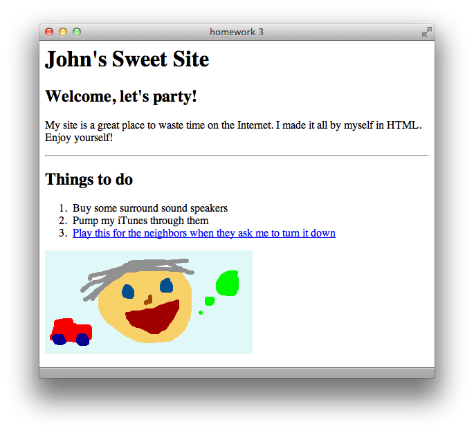

Breaks
In the last lesson, we learned how to use the <p> tag to arrange blocks of text on a page. I’ve also pointed out over the past two lessons that typing out hard returns in your HTML does nothing to the final page output. What if you don’t want to separate short text snippets by placing each one in its own <p> tag? HTML includes a line break tag <br/>, which turns into a hard return.
Notice that the <br/> tag includes a slash, so it “closes” itself like the <img> tag – there is no need for a separate </br> tag. To use it, just insert it in your HTML anywhere you would want to normally hit the return key. You can repeat it as much as you want, just like hitting the return key multiple times keeps moving down one line.
To create two full lines of space between two sentences, you need three <br/> tags: one to move on to a new line, and two for the empty lines in between.
for example, there are two lines of space between here... ...and here
The equivalent in HTML code:
<p>for example, there are two lines of space between here... <br/><br/><br/>...and here</p>
I wrapped the whole thing in a paragraph tag to show that you can use line breaks within paragraphs. Now would be a good time to create a new HTML document, with the normal <html> <head> <body> structure. Make sure it has a title too! Experiment by inserting your own <br/> tags to break up lines of text, and get a feel for how line breaks work.
That’s not the only break you get! Well, they’re not called breaks, but HTML also has horizontal rule tags <hr/>. These will also seriously break up whatever you have going at the time, because they insert a straight line clear across the page. Just like <br/> tags, they include a slash and therefore close themselves (no need for a </hr> tag).
Try inserting a <hr/> tag in your HTML document between two paragraphs, and save your file and open it in your browser. Yeah, it’s not very good-looking. These tags aren’t even used very frequently anymore, because similar effects can be done better through CSS. We’ll get there soon.
Lists
Now that we know how to insert hard returns into our pages, it’s a lot easier to create lists, right? Lets say we wanted to make a shopping list that looked like this:
• Eggs • Milk • Butter
You could just write each item on its own line, and separate it with a break:
<p>• Eggs<br/>• Milk<br/>• Butter</p>
That actually kind of works, but good luck getting your bullet point symbol to look the same in every browser. Also, lists tend to look nicer when they’re aligned neatly. You might guess where I’m going with this, and if you guessed a list tag, you’re right.
The kind of list we see above is an unordered list. That is, the items don’t need to be in any particular order. You wouldn’t use an unordered list with a list of driving directions, because certain steps need to be taken before others. So if you want to create an unordered list in HTML, you use the <ul> tag. This tag has a beginning and an end, so put a <ul> and a </ul> in your HTML document, with some space between to work.
<ul> </ul>
Each bullet point on our list is a separate item, so let’s call each one a list item. Similarly in HTML, you must declare each bullet point in your list a separate list item with the <li> tag. The <li> tag has a separate beginning and end, and wraps around the entire item. You must create a new <li> </li>entry for each item on your list. So for our grocery list above, the HTML code would look like this:
<ul> <li>Eggs</li> <li>Milk</li> <li>Butter</li> </ul>
This code, believe it or not, is way better than our first attempt at creating the list in HTML. When the browser sees the <ul> and <li> tags, it will automatically create a bullet point before each list item and handle all the indenting itself, as well as putting each list item on its own line. Very efficient! Try inserting a couple list items into your empty <ul> </ul>, making sure to wrap each separate item between its own <li> and </li> tags.
Smart Lists
It would be weird if HTML only offered unordered lists, right? Why not just call them lists? Of course there are ordered lists in HTML too, and not surprisingly, they use the <ol> tag, with the mandatory </ol> closer. The big difference between ordered lists and unordered lists is the symbol before each list item. As we already know, unordered lists use bullet points. Ordered lists, on the other hand, use numbers. And HTML is smart enough to increase the numbers for you with each list item.
Let’s look at a list of directions for making a peanut butter and jelly sandwich:
1. Take two slices of bread 2. Put peanut butter on one slice 3. Put jelly on the other slice 4. Eat and enjoy
The code for creating this list in HTML is almost the same as before, except that we use <ol> instead of <ul>:
<ol> <li>Take two slices of bread</li> <li>Put peanut butter on one slice</li> <li>Put jelly on the other slice</li> <li>Eat and enjoy</li> </ol>
This example is on me. Go ahead, copy the above code and paste it into the <body> of your HTML document. Save your work and open it in your browser. Neato! Look at our well-formed list.
Wait, we missed a step. Someone could easily make a mistake reading those directions, and eat each slice of bread independently, therefore missing out on the whole sandwich experience. We need to insert a step before the final step to clarify ourselves:
1. Take two slices of bread 2. Put peanut butter on one slice 3. Put jelly on the other slice 4. Mush the two slices together 5. Eat and enjoy
When editing this list in something like Microsoft Word, you may be lucky enough that the computer will re-number the list items for you. If not though, you have to go through and re-number the last two steps yourself. Here’s where the power of HTML lists comes in, when we insert just one list item in our code, as shown below, the browser still maintains the correct order of the list! Try it out for yourself by inserting the new line below into the same spot in your HTML document.
<ol> <li>Take two slices of bread</li> <li>Put peanut butter on one slice</li> <li>Put jelly on the other slice</li> <li>Mush the two slices together</li> <li>Eat and enjoy</li> </ol>
In our first ordered list, “Eat and enjoy” was step four. In our second ordered list, “Eat and enjoy” is moved down to step five, automatically. HTML will always treat ordered lists this way: the first list item gets number one, the next gets number two, and so on, regardless of when you type them into the document. Pretty cool, huh?
Comments
This last tag I’m going to teach you is special for a couple reasons. First, its end tag doesn’t include a slash, which is weird. Second, it completely prevents the content it surrounds from being shown in the browser. That’s right, it causes text to disappear. It’s called the comment tag, and it has an <!-- open tag and a --> close tag (those are two dashes). Why even use this, if it doesn’t even show up on the web page? You very well may never use the comment tag, and that’s fine.
However, you can use the comment tag to leave secret messages to yourself. For example, if you were a big time web developer, and you were designing a site for a client that you knew you would revise later, you could toss in a little comment to let you know what you were thinking at the time:
<!-- insert an ordered list after this paragraph -->
Or you can simply put in something that a user will only see if they use the browser’s “View Source” command:
<!-- I still watch my Barney videos. -->
Finally, you can use it to completely cancel out a part of your site, including tags, if you’re focusing on another area or just want to hide a section for a while:
<!-- <h1>Movie Reviews</h1><p>This is the part of my site where I critique the latest Hollywood has to offer.</p> -->
That’s right, anything within comment tags does not show up at all. Make sure not to split a normal tag in half, by enclosing the beginning part in a comment but leaving the closing part alone. Again, you may never use a comment tag in your life, but it’s there if you need it.
Key Concepts
- Breaks
- Line breaks
<br/>are like hitting the return key - Horizontal rules
<hr/>insert a line across the page
- Line breaks
- Lists
- Unordered lists
<ul>create lists of bulleted list items<li> - Ordered lists
<ol>create lists of numbered list items - The number scheme of ordered lists always stays in order
- Unordered lists
- Comments — hide text from the web browser
Homework
Now that you have a full arsenal of HTML tags, you can make a page full of different kinds of content. First, download this lesson’s materials and then create an HTML page that looks like the screenshot on the following page. Make sure to include these details:
- Make the page’s title “homework 3”
- Set the link
hrefto a real website - Include one comment
I have included the silly drawing shown below with the download, and it’s called “face.gif”. When you’re finished, name your HTML file “homework3.html” and compare it to the similarly named file in the Answers folder.
